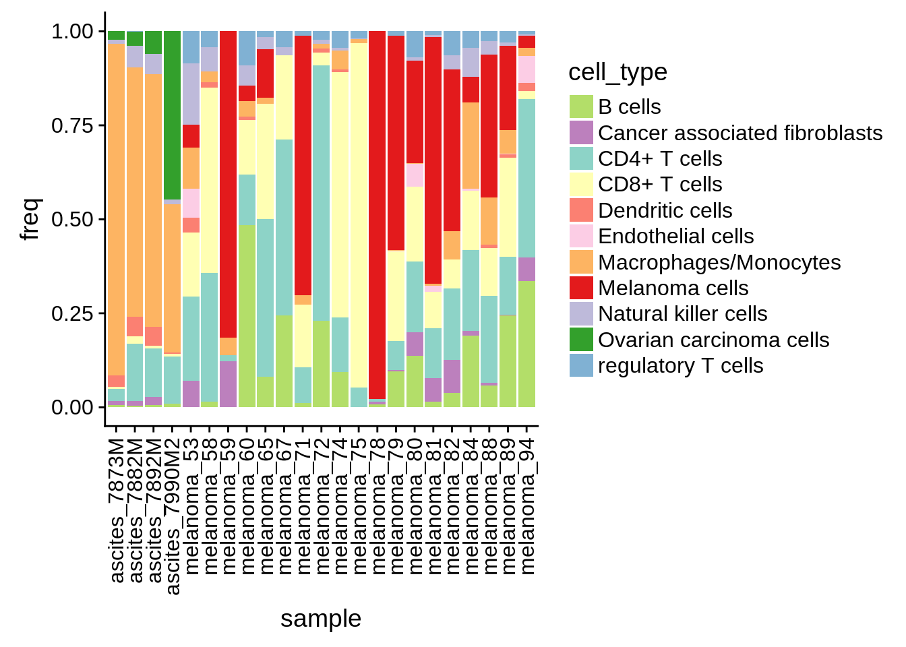
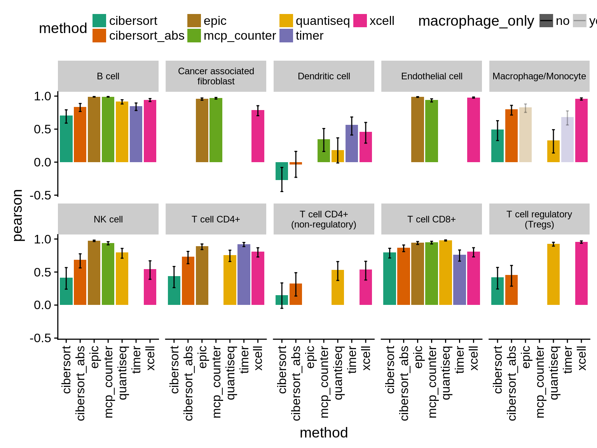

4 Spillover analysis
In this chapter, we will use single cell data from (Schelker et al. 2017) to create simulated pure immune cell RNA samples (and pure RNA samples from other studies (tbd)). We will then evaluate, if predictions of a certain immune cell type correlate with another.
immune_cell_samples = read_tsv("../data/immune_cell_reference_profiles/immune_cell_reference_tidy.tsv")
sample_description = immune_cell_samples %>% select(sample, CellType, Study) %>% distinct()
expr = immune_cell_samples %>%
select(sample, hgnc_id, TPM) %>%
group_by(sample, hgnc_id) %>%
summarise(TPM = sum(TPM)) %>%
spread(sample, TPM)
expr_mat = expr %>%
as.data.frame() %>%
column_to_rownames("hgnc_id") %>%
as.matrix() %>%
.[, sample_description$sample]4.1 Run the deconvolution
We first run all methods that are integrated in the immune_deconvolution_methods are package automatically in a loop.
all_results = lapply(immunedeconv::deconvolution_methods, function(method) {
print(sprintf("Running %s...", method))
deconvolute(expr_mat, method) %>%
mutate(method=method)
})## Warning in EPIC::EPIC(bulk = gene_expression_matrix, ...): The optimization didn't fully converge for some samples:
## SRR1551070; SRR1740062; SRR452331; SRR1551055; SRR1551048; SRR1740046; SRR1551073; SRR1551059; SRR1740050; SRR1740078; SRR1551057; ERR431583; ERR431606; ERR431601
## - check fit.gof for the convergeCode and convergeMessage## Warning in EPIC::EPIC(bulk = gene_expression_matrix, ...): mRNA_cell value
## unknown for some cell types: CAFs, Endothelial - using the default value of
## 0.4 for these but this might bias the true cell proportions from all cell
## types.4.1.1 run TIMER
TIMER (B. Li et al. 2016) is only available as a web resource. Moreover, the algorithm is adapted for each cancer type, so that we have to choose the corresponding option (Melanoma/Ovarian) when running the algorithm.
We therefore export the data required to run the algorithm and re-import the results obtained from the web-tool.
immunedeconv::export_for_timer(expr_mat, "../results/timer_input_spillover.tsv")
res_timer = immunedeconv::import_from_timer("../data/timer/timer_result_spillover.csv") %>%
mutate(method="timer")4.2 Results
Here, we map the results back to the “gold standard”. We aggregate the results of the different methods into a single table and clean it up for further processing.
gold_standard = sample_description %>% select(sample, true_cell_type=CellType)
all_results2 = all_results %>%
c(list(res_timer))
# # summarise cell_types from the method that only map to a single cell_type in the reference dataset (namely monocytes and macrophages)
all_results3 = lapply(all_results2, function(res) {
res %>%
map_results_to_dataset("quantiseq_reference") %>%
group_by(method, quantiseq_reference) %>%
summarise_all(funs(sum))
})
all_results_tidy = all_results3 %>%
bind_rows() %>%
rename(cell_type = quantiseq_reference) %>%
gather(sample, estimate, -cell_type, -method) %>%
inner_join(gold_standard, by="sample") %>%
group_by(method, sample) %>%
mutate(estimate_scaled = (estimate - min(estimate)) / (max(estimate) - min(estimate)), # add scaled estimate
estimate_fraction = estimate/sum(estimate)) %>%
mutate(signal = ifelse(sum(cell_type==true_cell_type)==1,estimate_fraction[cell_type==true_cell_type],NA), # add signal and noise
noise = sum(estimate_fraction[cell_type!=true_cell_type]),
abs_noise = sum(estimate[cell_type!=true_cell_type])) %>%
ungroup() %>%
arrange(method, cell_type, sample)all_results_tidy %>%
ggplot(aes(x=cell_type, y=true_cell_type)) +
geom_tile(aes(fill=estimate_fraction)) +
facet_wrap(~method) +
theme(axis.text.x=element_text(angle = 90, vjust = 0.5, hjust=1)) +
ggtitle("Spillover by Method") +
theme(panel.background=element_rect(fill="lightgrey"))
all_results_tidy %>%
ggplot(aes(x=cell_type, y=method)) +
geom_tile(aes(fill=estimate_fraction)) +
facet_wrap(~true_cell_type) +
theme(axis.text.x=element_text(angle = 90, vjust = 0.5, hjust=1)) +
ggtitle("Spillover by cell type") +
theme(panel.background=element_rect(fill="lightgrey"))
4.2.1 Calculate signal to noise ratio for each cell type
all_results_tidy %>%
select(method, true_cell_type, signal, noise) %>%
distinct() %>%
mutate(signal_to_noise = signal/(signal+noise)) %>%
ggplot(aes(x=method, y=signal_to_noise)) +
geom_boxplot(aes(fill=method), position = "dodge") +
facet_wrap(~true_cell_type) +
theme(axis.text.x=element_text(angle = 90, vjust = 0.5, hjust=1)) +
scale_fill_manual(values=color_scales$methods)## Warning: Removed 25 rows containing non-finite values (stat_boxplot).
all_results_tidy %>%
select(method, true_cell_type, abs_noise) %>%
distinct() %>%
filter(method %in% c("xcell", "quantiseq", "epic", "cibersort")) %>%
ggplot(aes(x=method, y=abs_noise)) +
geom_boxplot(aes(fill=method), position="dodge") +
facet_wrap(~true_cell_type) +
theme(axis.text.x=element_text(angle = 90, vjust = 0.5, hjust=1)) +
scale_fill_manual(values=color_scales$methods)
References
Schelker, Max, Sonia Feau, Jinyan Du, Nav Ranu, Edda Klipp, Gavin MacBeath, Birgit Schoeberl, and Andreas Raue. 2017. “Estimation of immune cell content in tumour tissue using single-cell RNA-seq data.” Nature Communications 8 (1): 2032. doi:10.1038/s41467-017-02289-3.
Li, Bo, Eric Severson, Jean-Christophe Pignon, Haoquan Zhao, Taiwen Li, Jesse Novak, Peng Jiang, et al. 2016. “Comprehensive analyses of tumor immunity: implications for cancer immunotherapy.” Genome Biology 17 (1): 174. doi:10.1186/s13059-016-1028-7.